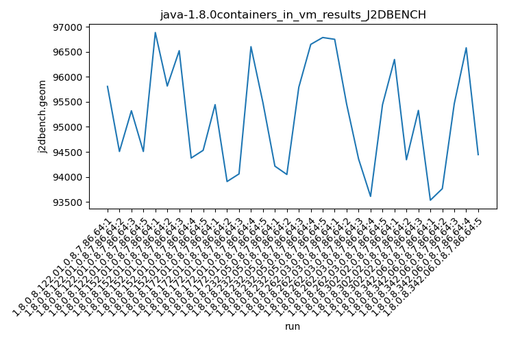
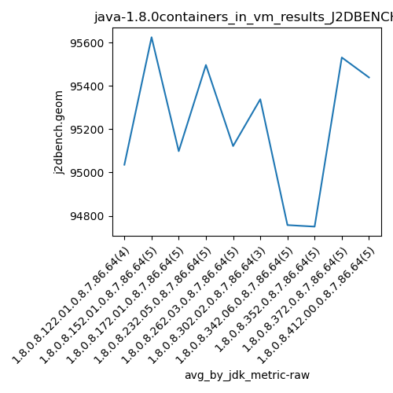
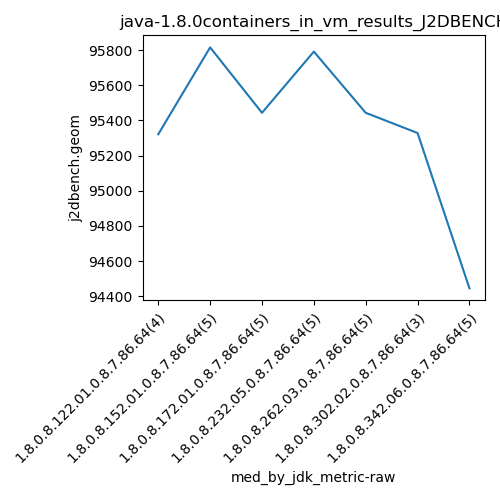
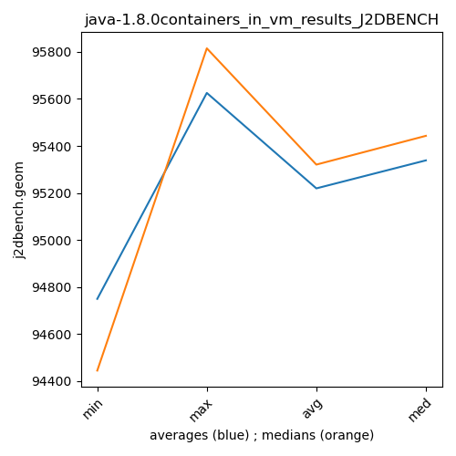

java-1.8.0 J2DBENCH
Context at bottom
/home/jvanek/git/benchmarks-in-nested-virtualisation-toolchain/final_results/containers_in_vm_results/containers_in_vm_results_JMH
java-1.8.0
J2DBENCH
/home/jvanek/git/benchmarks-in-nested-virtualisation-toolchain/final_results/containers_in_vm_results/containers_in_vm_results_J2DBENCH
java-1.8.0
J2DBENCH
containers_in_vm_results_J2DBENCH
final score
Expected number of java-1.8.0 JDKs: 10
1st avgmed_alljdks_metric:
/home/jvanek/git/benchmarks-in-nested-virtualisation-toolchain/final_results/result_processing.py /home/jvanek/git/benchmarks-in-nested-virtualisation-toolchain/final_results/containers_in_vm_results/containers_in_vm_results_J2DBENCH j2dbench.geom False
values: [95807, 94508, 95321, 94508, 96883, 95815, 96521, 94377, 94531, 95443, 93908, 94060, 96600, 95482, 94215, 94049, 95791, 96647, 96784, 96748, 95452, 94357, 93611, 95443, 96345, 94343, 95328, 93535, 93765, 95462, 96578, 94445, 94027, 95205, 95743, 94688, 94086, 94927, 95704, 95061, 96715, 95252, 95799, 95767, 94662, 95681, 95289]

Expected number of iterations: 5
final number of values: 47 out of 50
Pass rate: 94.0%
values: (93535, 96883, 95218.46808510639, 95321)

** accuracy from all jdks and runs
more is better
MIN: 93535
MAX: 96883
AVG: 95218.46808510639
MED: 95321
Relative differences 1:
MIN-MAX: 3.0 %
MIN-AVG: 2.0 %
MIN-MED: 2.0 %
MAX-MIN: -4.0 %
MAX-AVG: -2.0 %
MAX-MED: -2.0 %
AVG-MED: 0.0 %
stored to java-1.8.0.properties. sort | uniq that!
2nd avgmed_by_jdk_metric:
values: [95036.0, 95625.4, 95098.6, 95497.2, 95122.2, 95338.66666666667, 94757.0, 94749.8, 95531.8, 95439.6]

values: [95321, 95815, 95443, 95791, 95443, 95328, 94445, 94688, 95252, 95681]

values: (94749.8, 95625.4, 95219.62666666668, 95338.66666666667)
values: (94445, 95815, 95320.7, 95443)

** accuracy from all jdks where runs were avged
more is better
MIN: 94749.8
MAX: 95625.4
AVG: 95219.62666666668
MED: 95338.66666666667
Relative differences 1:
MIN-MAX: 1.0 %
MIN-AVG: 0.0 %
MIN-MED: 1.0 %
MAX-MIN: -1.0 %
MAX-AVG: -0.0 %
MAX-MED: -0.0 %
AVG-MED: 0.0 %
stored to java-1.8.0.properties. sort | uniq that!
** accuracy from all jdks where runs were medianed
more is better
MIN: 94445
MAX: 95815
AVG: 95320.7
MED: 95443
Relative differences 1:
MIN-MAX: 1.0 %
MIN-AVG: 1.0 %
MIN-MED: 1.0 %
MAX-MIN: -1.0 %
MAX-AVG: -1.0 %
MAX-MED: -0.0 %
AVG-MED: 0.0 %
stored to java-1.8.0.properties. sort | uniq that!
/home/jvanek/git/benchmarks-in-nested-virtualisation-toolchain/final_results/containers_in_vm_results/containers_in_vm_results_RADARGUNs3
java-1.8.0
J2DBENCH
/home/jvanek/git/benchmarks-in-nested-virtualisation-toolchain/final_results/containers_in_vm_results/containers_in_vm_results_SPECJBB
java-1.8.0
J2DBENCH
/home/jvanek/git/benchmarks-in-nested-virtualisation-toolchain/final_results/containers_in_vm_results/containers_in_vm_results_RADARGUNs1
java-1.8.0
J2DBENCH
/home/jvanek/git/benchmarks-in-nested-virtualisation-toolchain/final_results/containers_in_vm_results/containers_in_vm_results_DACAPO
java-1.8.0
J2DBENCH
pass rates:
containers_in_vm_results_J2DBENCH=94.0%
Context:
- containers_in_vm_results
- J2DBENCH